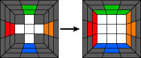
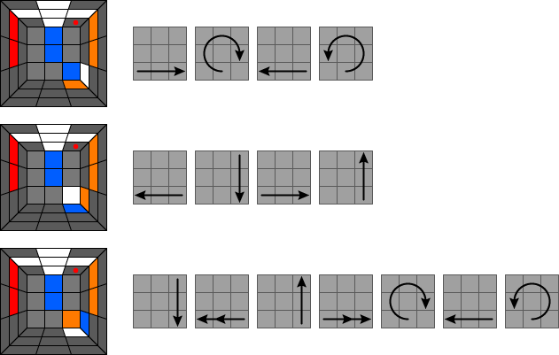
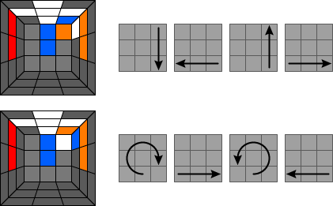

Etap 2 - narożniki białej ściany
Na tym etapie układania kostki należy powkładać 4 narożniki zawierające biały kolor w odpowiednie rogi, aby utworzyły całą białą ściankę oraz pierwszą warstwę kostki. Poniższy obrazek pokazuje, co należy uzyskać:

Podobnie jak w etapie pierwszym, nie powinieneś mieć problemu z wrzuceniem białych narożników na odpowiednie miejsca. Zdaję sobie jednak sprawę, że co poniektórzy mogą mieć małe problemy, dlatego poniżej kilka algorytmów. Czerwona kropka oznacza miejsce, na którym znaleźć ma się biała ścianka narożnego klocka:

Zdarzyć się też może przypadek, że klocek narożny z białym polem jest już na swoim miejscu, jednak jest źle obrócony. W takim przypadku należy go najpierw przerzucić do dolnej ściany, a następnie zastosować jeden z powyższych algorytmów wrzucając go na miejsce już w dobrej orientacji. Poniżej dwa przypadki, kiedy musimy przerzucić niewłaściwie obrócony klocek z górnej go dolnej warstwy:

Po zakończeniu tego etapu przechodzimy do kolejnego - druga warstwa.